AlaskaStories.com
Stories 14...
Page contents:
Toppers: Society
FSMIS and FCS Board Meeting: Society
Hey, this aint no bullshit...
Topper's
Whoa, what time is it? Half past January 2011 !!
Hmmm, I should check my watch more often. Well I've been on an adventure, besides the usual rabble rousing, trouble causing, arm waving, laughing at the collapsing government, some guffwaaing, and general carrying on. Not one story during 2010. Must have been quite an adventure. Might have been desperate indeed, albeit as usual.
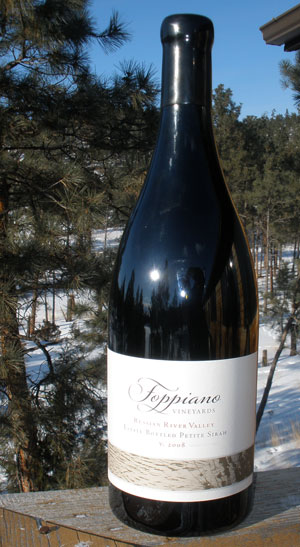
Whadya mean this story is not of, by, for, and within Alaska? The government was supposed to be of, by and for the people. There's not even an illusion of that lie left. The Washington DC government is of, by and for itself, attacking everybody in the US and world. And I know for a fact that the wordsmith got away with a story about Kathmandu Nepal somewhere on this website, despite the web slave's threats. So I can write a Montana story. Wait. I am the wordsmith. I'll just use the same ploy I used last time. Pull out the .44 with enough bluster the web slave is scared frozen, shoot the top off a bottle of whiskey and hand it to him while his ears are still ringing. Wait. I am the web slave. Must have been pretty good whiskey. Probably Lagavulin 16, the gold standard of all whiskey's, unless of course you send me something you think is better. So the Montana story will be uploaded as soon as I find that upload icon. If you are reading this, I found it.But whiskey is only good for bribes and stories. Wine is good for the the world and stories. The wordsmith accepts wine also.
Here in Montana, right here where the richest gold strike was found in the entire Shire, extending all the way to the next richest gold strike story told by the other guys up river a ways or over the hill, not far from "the gulch" where the gold was found in downtown Helena, back when it was a string of gold miner tents, we are planning the next BIG BOTTLE PARTY, not unlike the big bottle parties in Fairbanks at the prestigious Alaskan Alpine Club headquarters.
There is a mutually admirable rapport among the Montanians and Alaskans. Well armed. Independent. Enjoy fine wine, good cigars. Eat wild game. Unmitigated contempt for government, except of course for our good friends in government who lament their ill luck in employment, on account as the wordsmith had a couple government jobs back in desperate times. In that regard Helena is annually embarrassed by the convening of the legislature here at the State capitol. There is always debate as to just how much the average IQ of the town drops when the legislators show up, between a lot, and more. Have you ever wondered why the more of our money the government spends on its idiot decisions, the worse things get and the more money they seize under more laws said by legislators to "reduce taxes"? Well, just ask any DemocanRepublicrats a few questions, then try to find any question answered by their resulting rhetorical tap dancing. The English language needs a short word that describes the zenith of an intellectual void. Reptiles have more analytical skills, and cause fewer problems.
The gold is gone from the gulch, but Helena has one asset that sets it among the top in the international arena. Helena has Topper's. Topper selected that fine double magnum of Toppiano wine for the Big Bottle Party.
Topper, at Topper's Wine Cellar, has the finest selection of wine knowledge in the Shire and Beyond, and the wines to verify it, along with gourmet ales and stories of Montana ranch life. Topper has been described as having the depth and complexity of the finest wines in his cellar. And he has selected the best of the best. You might go to Topper's to acquire fine wines and ales, but you will get more wine knowledge than the industry wants you to know, if you ask or tarry too long. When the bottle of wine is empty, you will still enjoy the knowledge. Knowledge is the only thing that is ever truly yours. The more you acquire, the more you get to laugh at what you prior did not know, like why you too hastily drank that very good but "slightly stemmy" flavor wine instead of letting it open or breathe longer to refine that flavor into a richer subtle accent, since you bought two bottles and should have known by the second one, or why you voted for a DemocanRepublicrat again after all those other times so obviously failed to do anything but make the problems worse.
Topper might tell you, if you can remember the details better than the website wordsmith, that there was the time up along Wolf Creek, when it became obvious they were not going to get home that night because of the snow and ice, the nasty wind, the dark of night, the overflow ice on the creek, the wolves howling, and it was a long time ago back before they had the good sense to have a bottle of Soose Creek Cabernet Sauvignon 04, in the saddle bags, or maybe two bottles. The horses had more good sense than the riders. Well, you know about Wolf Creek. Hard scrabble ranches. Aint no good ranch land in the whole valley until you get up on the prairie, and then there aren't no water. Well, there they were, and it was desperate indeed, albeit as usual, with the howling wind swirling-up a blizzard of cold dry Montana snow. Huddling under a cold spruce tree for the night was getting to look like what might have to be done, so the horses were desperate to find an option, on account as they don't fit too well under spruce trees. Then there was a light in the woods, down-creek a ways, so they hunkered against the wind while the horses took them to a barn, with a small ranch house too.
"My gracious, what are you boys doing out in this storm? Get the horses in the barn, feed them some hay and get in here for some hot soup" The Smith's were poor hard-scrabble ranchers, so more water was added to the potato soup with some bits of venison, and the boys were soon at the fireside. The Smith's were the common sort of Montana ranchers who would welcome anybody on a cold snowy night, shelter the horses and feed the rider's too. There was just space enough in the small ranch house for the boys to sleep in the loft, which by chance was over the kitchen wood stove, so come morning they woke to the warmth of a wood fire and the smell of bacon and eggs. It can't get better than that.
Anybody else would have to buy the ticket all the way to Montana, ride up Wolf Creek and slip back through a crack in time for such a morning. There was more adventure as the storm got worse, but we had to get some wine so we got back to wine stories. Oh, some of those farmers in those Montana creek valleys where government boys wisely don't go, finally figured out that the adventure of hard-scrabble ranching became progressively less of an adventure, and more work for less money, so they ordered up some of the finer California varietal grape juice, and made wine with admirable qualities perhaps found only in Montana, maybe because of the mountain elderberries or pure Montana thoughts they added. You can buy some of it only in Montana, and you have to know somebody to know just where to get it. Just casually ask Topper. He was in that loft, and knows some of the folks in those valleys.
In fact, the Montana folks are so far ahead of the folks toiling under the yoke of the insatiably greedy, malicious DemocanRepublicrat government, out there in cyber-space, the Montana folks are even labeling a lot of their products as "For sale in Montana only". You see, they figured out with the gun issue that since the stinkin feds corrupted the "inter-state commerce clause" of the US Constitution to seize control of nearly every human action and product that might cross a State line, negating a primary purpose of the US Constitution intended to preclude a central government tyranny, the Montana folks are making things labeled for sale or use in Montana only, to thus regain the individual freedom Tom Jefferson, Ben Franklin, George Washington and those heavily armed sorts intended in the first place. The fun part of that is that the resulting trend is inherent. Humans crave freedom from the decisions of the school yard bully more than the federal school yard bully brats comprehend. When freedom from the Central War Regime is achieved by simply limiting products and services to one's own State, more and more people in the various States are going to figure it out, just like figuring out hard-scrabble ranching. When nobody can buy anything that isn't made in their own State, so they make everything in their own State, there aint going to be any use for the useless Washington DC thugs who keep stealing more and more money under more and more rhetorical illusions for taxation.
When the process of selling products only within each state, to exclude the federal thieves, becomes obviously popular, the wordsmith and web slave are going to take credit for it, because of this story being read by the world. Alas, the US government is going to collapse sooner because thinking people are figuring out on their own that all those paper US dollars being printed as fast and the 220 volt presses can run rolls of paper past the dispensers under the barrels of ink, aren't worth any more than the fire-starter paper in the cardboard box by the stove. If you are not expeditiously investing in gold, silver, guns, ammo and wine, you better learn hard-scrabble ranching in planter boxes duct-taped to the wall outside your apartment window, and be armed to shoot the top off the next bottle of wine made in your State.
Among too much wine knowledge for your and my minds, even if we download each other's hard drive, Topper keeps track of the quality of flavor in the wines he sells, in relation to the wine's vineyard annual production statistics and location. You see, all too often really good wines get sufficiently popular and in demand that a certain percentage of the winemakers get as greedy as government folks so they buy a bunch of any old grapes from any old vineyard and increase production to derive the increased money from their popular label of wine, unlike the really good winemakers who just keep wearing the same old bib overalls and appreciate the reasonable income and good life they earn from the amount of really good wine they can make from the grapes they know, like the Toppiano wine folks. Well, as any really good wine drinker knows, the variables of wine making are so refined for each flavor that you just cannot get the same flavor with a change in grapes, terrior (soil), vats and a gaggle of other such things. The grape vines that produce one flavor when properly thinned, will produce another flavor if not thinned to increase tonnage of grapes per acre. So if you invest in discovering the flavor you most like, and the wine maker acts like the government, you just gotta invest in a new quest for good wine. Topper keeps track of those things to keep his selection of wine at the top edge of really good flavor, along with the same quality of Montana ranch life stories.
WAIT, this story was supposed to be about the BIG BOTTLE PARTY. Well, it is. The photo of the bottle is proof. Ah, but the party has not yet started, so the above is just the introduction, and maybe a first chapter by modern sound-byte standards. So just check back on rare occasion to get the results of the party when it happens, because that is mighty fine wine in that bottle from Topper, and these will be Montana folks at the party. To avoid the Federal Homeland Security Gestapo laws under the inter-state commerce clause, this party is "for Montana only". You other folks have BIG BOTTLE PARTIES in your own States, and send the web slave the full report, maybe through WikiLeaks to keep government folks from reading it, on account as Obama recently ordered all federal personnel managers to spy on, and report, any federal personnel who access WikiLeaks, OpenLeaks or any other websites that criticize the government, so government personnel can be kept ignorant and dutifully believing the government lies about how good the government is.
Mo later when we shoot the top off that Big Bottle of wine.......
2009 Fairbanks Single Malt Islay Scotch and Fine Cigar Society Board of Directors annual meeting
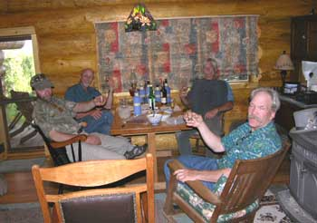
There we were, mind you, and it was desperate indeed, albeit as usual. Due to conditions, the usual annual winter meeting of the Board of Directors of the prestigious Fairbanks Single Malt Islay Scotch and Fine Cigar Society was repeatedly postponed until it was the middle of summer already. Close enough. But by all accounts the Director from Juneau would be unable to attend, due to the good sailing vessel Mischief and other adventure enticements. Well, the annual business of the Board was of such substance and concern to our international contacts that the meeting could no longer be postponed.
The meeting took place in the exquisite log cabin overlooking the entire Tanana River Valley forest, and looking at the magnificent Alaska Range gleaming white in the not too distance, there behind a bit of a new haze from the many forest fires that assist with the ongoing evolution of the ecosystem and global warming. Interior Alaska is a fire ecology, cycling the old growth spruce into new alder and willow for moose food, then birch and poplar for woodpecker habitat, then spruce again for fires for airborne carbon particles to warm the earth in preparation for the return of dinosaurs, or something like that. Al Gore has the program, but he and the Trilateralists are keeping it secret.
After the usual fussing around with the preparation of the gourmet selection of our de' hourves, the meeting came to order, somewhat. No sooner had we poured the official "meeting came to order" first round of Scotch, of course the Gold Standard, that being Lagavulin 16, than the Director from Juneau walked in the door. Considering the distance and other considerations, this was a genuine surprise of high quality. Exclamations where exclaimed. The secret Society handshake was performed. Another scotch glass was secured from the Scotch glass vault, and Lagavulin sloshed therein.
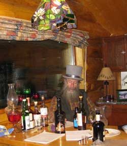
The clinking of glasses, a few rebbies and harrumphs, scooting of chairs, and the meeting came to order again.
While the prestigious Secretary fumbled around for some paper and a pen, and assumed his proper position close to the bottles of Scotch, the lamentable but impressive account of the ProjectNight.com salmon and moose sausage smoker going up in smoke was recounted. Fortunately we had some moose sausage that predated the event. Well, where there is smoke, there is fire, sometimes more than one prefers. That was the finest meat smoker in the realm.
The official quorum therefore present, great and weighty matters of serious consequence, upon which the Scotch and Cigar worlds teeter at the very brink of jubilation, as usual, were open for homdihooming. So it was that the first bottle of the meeting's official six bottle blind tasting and evaluation, was opened, after having calibrated our pallets with the Gold Standard.
#1 was poured.
The Minutes of the previous meeting were presented with careful, analytical and critical attention by the Society members, as you can recognized in the photos. Accuracy is paramount in FSMIS&FCS proceedings. The Minutes were probably approved, or not disapproved. Hmmm, the minutes reflect that we had several more Scotches at the previous meeting. Must have been a well approved meeting.
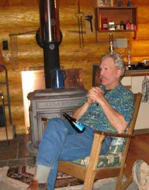
#1 was variously described as mild, light, not peaty or smoky, perhaps not Islay, straw, volatiles on the nose and a little on the slaunchwise side with an intriguing mid note confusing the tongue but otherwise a superlative Scotch deserving of a position in any well appointed liquor cabinet. The best locations for crab pots near Juneau were pontificated upon, and a few fishing stories. Some of the bizarre living things that come up on a hook from the bottom of the water near Juneau are obviously influenced by the politicians in the town, and therefore are to be thrown back quickly. There was an account of fly fishing for halibut from the good catamaran WinterKing.com at Homer, under the Captainship of Rex and Holly. Good things are to be said for each location along Alaska's seacoast that is longer than the entire seacoasts of the lower 48.Goodness gracious the wrap came off #1 to reveal a Laphroig Islay Double Cask Quarter Cask Scotch, made by blending a quarter of the cask in another cask with an additional aging period. This accounted for the complexity that so extensively confused the members of the Board who thereupon discussed Alaska airplane crashes, Base Jumping and Jet Man flying, all on YouTube, and poured the next Scotch. Is it not interesting that international Base Jumping has advanced human ability to another extreme, with the ability to now jump into deep caves, and fly in freefall next to cliffs, etceteras. Yet the primitive mentality Police-State US government arrested, jailed and confiscated the equipment of many of the innovative Americans who developed Base Jumping during the 70's. If Leonardo de Vinci were an American in these times, the government thugs would have already renditioned him to Guantanamo to be tortured for daring to think advanced thoughts. All governments (their personnel) in human history have hated and attacked thinkers and innovators. Knowledge threatens the institutional power of inherently ignorant government leaders and bureaucrats who were just never taught how to think (ask and answer questions of their contradictions) All governments are dependent upon ignorant societies, with war regimes requiring the most ignorant societies, such as the American society. As it is with the Double Cask Quarter Cask, the mixing of aging precluded an age designation for the #1 Scotch, again explaining the difficulties of our perceptions.
# 2 was poured and carefully ascertained to be rich, peaty, butterscotch, caramel, buttery, certainly an Islay and most likely double wooded. Well after the fumble of descriptions for the previous Scotch, we wisely scooted to the other end of the rhetorical spectrum, sort of to hedge our illusions.
Our Scotch expertise and high standards were made evident.
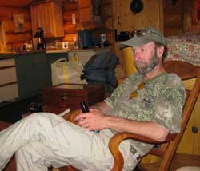
After ample homdihooming and a discussion of Boreal owl nests, the unwrapping revealed # 2 to be a Bowmoore Darkest 15 year, a good friend with a history of pleasant thoughts, and maybe a few bizarre thoughts. This Scotch should be on every Scotch shelf, especially if you graciously invite any of the Board members to discuss fine Scotch. Contact the web slave. His email is somewhere on this website.
While the account of the proceedings proceeded inside the inner sanctum of the cabin, the photos outside the inner sanctum proceeded faster, so the photos to the left got there first. Do not be confused. All official tasting was conducted inside, without distractions from our intellectual analyses, and all the other proceedings were conducted outside, or something of that general sort.
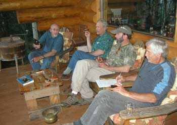
#3 was introduced with a bit of the effects of it being #3, but nothing sloshing over the top of table. It was promptly noted for its spicy cinnamon tangy oak charcoal buttery citrus orange smoke flavors, as you would concur.Somehow the stories of falling off cabin decks and down stairs wafted through as the Director from Juneau presented a well presented 8 pack of Cohibas, Partagus, and Macanudos, fresh from JR. And the fine port casks from Portugal were discussed for their flavor enhancement qualities for certain Scotches and Brandy's. The Minutes were reviewed to ascertain that the 12 December 2003 FSMS&FCS Board Meeting offered the most grand falling off the deck story. Well, these things must be kept in order for history.
#3 was revealed, much to our delight and confirming our fine taste, to be a Balvenie 21 year old Portwood Single Malt Scotch finished in Port casks from Dufftown Banffshire. The finest port casks in the Shire.
The most current report on the reason that Sarah Palin resigned as Governor had something to do with being caught with a goat, and photographed. This report was straight from Juneau, revealed by a person who could not be named because she was not authorized to speak for the agency, and therefore as credible as all the news printed and broadcast by the news media of these days. The goat was offered a million dollar book deal.
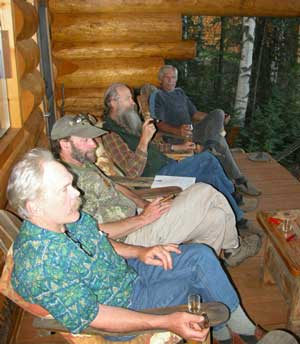
#4 offered a subtle iodine flavor straight from the Islay kelp beds sloshing with the ocean swells, back and forth on the rocks of the Islay rocky shore, along with a significant flavor-burst and strong volatiles giving it a possibly young flavor or something unusual that we looked forward to discovering upon its unwrapping. Enjoyably perplexing.
This was mixed with tales of humming birds, kestrels, clouds of redpoles, robins, goshawks, pygmy owls and ravens. Well, they just so suddenly flew through the stories that the secretary was befuddled but up to the task of properly recording their passage. Ravens display such intelligence that they may be the first animals with whom humans communicate by actions, and scare us. So when I was a kid I had a pet raven, which I acquired from a nest. After successfully conveying to the young raven that I was the most convenient source of food, he flew free and stayed where I stayed. I took him on trips, and let him go where I was staying. So one day I laid down on the lawn, on my side. The raven, also on the lawn, hopped up to my face, stared at my eyes awhile, then hopped to one side and very carefully and slowly stuck its beak into my ear a ways, then very quietly talked to me for a couple minutes, with a remarkably complex array of quiet words (sounds), then hopped back in front of my face and stared at my eyes. I tried to duplicate some of the sounds, but apparently failed because after 2 or 3 of the Raven's attempts to usefully communicate, he gave up on this dumb human, and flew off on another adventure. He did this on several occasions. Ravens understand what human ears are, what they are for, that they are delicate, and that something can be learned by trying to rationally talk to humans who establish a rapport with ravens. #4 came through with a cinnamon flavor, variously strong, smooth or rich in alcohol.
The sailboat stories were mixed with those of the increasing maliciousness of the US Coast Guard who are now getting their training and personnel from the Homeland Security Gestapo and TSA. Well, what with terrorists now behind every Bush, local sailboats pulling out of local harbors are prey for the budget-excuse-desperate American Police State thugs in Coast Guard boats protecting us from, ah, ah, well come to think of it, maybe we need to hire somebody to protect us from the American police thugs.
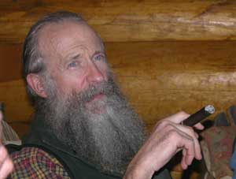
We enjoyed the moose sausage, dark red pepper chocolate, jarlsberg and limberger cheeses, salmon spread and fancy crackers. Not sure why some of the Scotch had a limberger undertone.Sherry casks are recommended for finishing some Scotches.
#4 unwrapped to be a 25 year old Caol Islay Single Malt with 59.4 percent alcohol, explaining its flavors completely.
#5 was introduced to our glasses, and, by chance or intent, to our pallets, with a butterscotch aroma to the nose and a mild spike of leather to the tongue. Hmmm, how does one get a mild spike? I'm not too sure about some of these descriptions, that progressed to a smooth floral mid note with a 5'ish finish and a hint of limberger. Hey, wait, there aint no Scotch with a hint of limberger. This year's limberger cheese was smooth and mild, worthy of the occasion, with a slight old rotted flavour.
We discussed the differences and potential of Scottish and Alaska peats, of which there are many. And the flavor of #5 opened to a simply wonderful experience. #5 should be in every Scotch cabinet.
#5 was shortly to be brandished as a Bunnahabain 25 year old. What's with two unusually aged 25 year old fine Scotches? Thereupon we were appraised of the 25 year anniversary of one of the esteemed Board members whose astute and lovely wife presented him with the Scotch nectar of those years. That Director has just been too pampered.
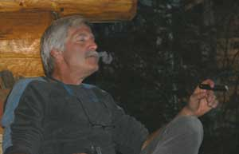
Kate Bull and Andrew Embick stories were shared amid joviality. The Kate Bull in the car with other climbers and cigars all the way to Valdez and back story, is always a worthy account. Imagine Kate being polite to her fellow climbers on the way to Valdez, and then after ice climbing, on the way back from Valdez, Kate rightfully being less inclined to endure the stinking cigar smoke from fellow climbers of no greater climbing skills.#6 was promptly declared the flavor of the evening with a complex pink grapefruit prune flavor that flowed into leather with an aroma finish that could not be adequately complemented. Our attention is turned to the cigars.
#6 was unwrapped to be a Bowmoore 30 year old Single Malt Islay Scotch in a black ceramic bottle with a sea horse dragon on the label, lovely in all regards.
We retired to the veranda with a selection of cigars in hand, for discussion of all things important to the state of the State.
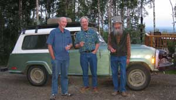
Heavy snows in the last couple years in Southeast Alaska have reduced the deer population a bit, but the interior moose are doing well, and the receding ice in Greenland is presenting new land for various scientific analyses of land long under ice. The Galaxy Pipe made from bird's eye maple was discussed, and implemented, along with cigar tools and comments on barb wire fencing. Chicken raising was compared with sheep and goat raising in northern ecosystems, and Danny Woods is raising cattle on the grass portion of the local hay fields.
Three Board members obscured an otherwise fine photo of a 1973 Jeep Commando, the last year the Jeep Commando was made, and the only year it had that non-jeep-like front. It was the first SUV. A few years later American Motors rightfully went bankrupt, and the Jeep name was bought by Chrysler, which sustained its incompetence with taxpayer money slipped to it by crooked politicians, as usual. If American auto manufacturers would drive a Japanese car for a month, they would learn what American auto drivers want in a car.
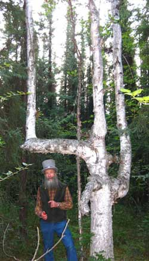
We would ask how Fairbanks got so many ugly, ugly hotels in the last couple years if we did not already understand the tourism boom and the progression of economic efficiency. It is okay, since most tourists have no taste in fine hotels anyway. In contrast, the FSMS&FCS Board of Directors patronize only the finest tents and snow caves in the mountains befitting our elevated status.A formal motion was made, homdihoomed upon and adopted regarding the next Board meeting to be conducted on Mischief. So be it. At least a week long meeting is in order, with a prior prepared crab pot strategy. It was noted that cigars on the veranda, and therefore on the deck of a sailboat, seem more pleasant than in a small cabin in the winter. The annual winter meeting of the Board is in jeopardy.
Some amazing yachts show up in Juneau and Sitka in the summer, each of which no doubt have an ample Scotch supply in the hold. If you sail an amazing yacht, or just an impressive one, or even a Klepper kayak with a hold stocked with Scotches, in Alaska waters, kindly contact the web slave who will notify the Board members for a meeting of the Society on your yacht, if you wish. The Society meeting minutes may be entered into the Ship's Log to elevate its status in the future annals of yacht sailing history.
There is yet a dearth of pirate ships, but that fascinating social and economic stimulus plan sub-culture seems to be on the increase. Modern pirate ships are not known for their on-board supply of Scotch, and are thus not yet fully integrated into society.
The fine efforts of the Alaska Brew Company in Juneau were complimented. Their Smoked Porter is to be appreciated at any opportunity. And a photo session was conducted, which induced a dissertation on camera battery technology.
Thereupon the Board retired to the local ski trails through the trees, for a walk-about. In fact it was quite a long walk-about. Our first duty was to communicate with, ask permission, and pay respects to the famous Triferformed Birch Ent who graced our efforts with good tree energy.
We visited the nearby very old remnants of a classic miner's cabin next to the remains of an old drift mine. There was so much material brought out of the mine, stacked up around it, that it was probably a good gold producing mine for awhile. Exploratory shafts do not have that much material around them. Bedrock in the area is close to the surface, and bedrock is where gold is found. Last year's goshawk nest was visited. Profound concepts were discussed out in the woods where the government spy microphones could not record our secret policies, plans and conclusions, which is why we did a walk-about or course. When we start making Alaska Scotch, using the abundant Alaska peat for roasting the malt, we do not want any incessantly bothersome Federalies wanting to be customers for the purpose of arresting us for an unapproved use of peat. They can get their Scotch from Washington DC.
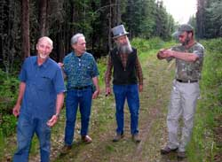
The photo shows one of the Directors describing the diameter of the largest tree found in interior Alaska. Well, what we lack in tree size, we make up for in, ah, mosquitoes.
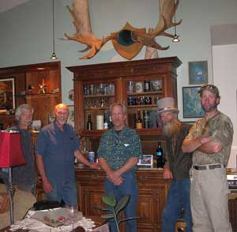
Next a house, shop and woodshed tour rounded out our exercise-rejuvenated intellectual abilities.
Fascinating history was learned. Some moose antler stories were told, and high quality art was pontificated upon. There is the opportunity for a mountain artist to become profoundly famous by painting a large, classic, grand Alaska Range mountain scene, and donating the painting to the prestigious world headquarters of the Alaskan Alpine Club, where climbers from around the world will admire it, then go climb the mountain in the scene of course. What? Purchase the painting? With what? We are talking about a mountain climber's headquarters, not a government agency that took everybody's money away from them so government could by all the art for itself, and leave the people with magazine pictures.
A trip to the Black Rapids glacier was planned, with a dozen artists to compete for the opportunity to paint and donate such a painting. Good idea, huh? Good ideas arise from good Scotch.
Back in the meeting cabin, it was concluded that the next meeting shall take place in Taku Harbor. The Juneau Director shall provide biddies as desert cigars.
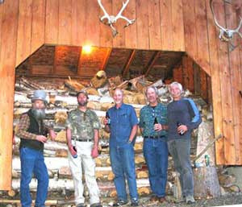
A somewhat approximate quorum being present, the prestigious Board of Directors of the prestigious Alaskan Alpine Club conducted a somewhat discussion of prestigious business. The HQ project, museum project, classic mountain painting, roof ice axe for Google Earth, and Waterman hut project, were discussed, and all the previous conclusions ratified. We reviewed the fine flavors of the evening's Scotch notes.
Bioluminescent trails behind Mischief were described in detail, along with an array of similar stories, rhetorical illusions and a few bald-faced lies.
The meeting was adjourned at 1:10 AM. Expect the results to be recognized internationally.
There may be more stories after I see what-all on my desk is too late to get done anyway.
Stories 1
Stories 2
Stories 3
Stories 4
Stories 5
Stories 6
Stories 7
Stories 8
Stories 9
Stories 10
Stories 11
Stories 12
Stories 13
Places
Concepts
Smoking
Smoke Photos
Smoke Others
Stuff
Links
Home